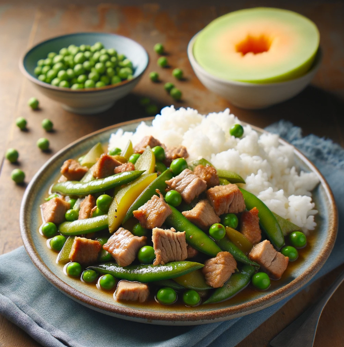

Pork Baguio Beans-Chicharo Guisado
Ingredients
For the pork:
- 1/2 pound boneless, skinless pork shoulder or belly, cut into bite-sized pieces
- 1 tablespoon vegetable oil
For the vegetables:
- 1 cup fresh baguio beans, trimmed and cut into 1-inch pieces
- 1 cup fresh chicharo (snow peas), trimmed and strings removed
- 1 medium red onion, chopped
- 2 cloves garlic, minced
For the sauce:
- 1/4 cup soy sauce
- 1/4 cup water
- 1 tablespoon brown sugar
- 1/2 teaspoon ground black pepper
- Salt to taste
Nutrient:
| Nutrient |
Amount |
| Calories |
400 kcal |
| Protein |
25 g |
Brown Rice
Nutrient:
Nutrition Information:
| Amount (approximate) |
Calories |
Protein |
Fat |
Carbohydrates |
| 400-500 kcal |
|
25-30 g |
|
|
Meal Procedure
- In a pan or pot over medium heat, add the vegetable oil.
- Add the pork pieces and cook until golden brown on all sides, about 5-7 minutes.
- Add the onion and garlic, and cook until softened and fragrant, about 2 minutes.
- Stir in the baguio beans and chicharo, and cook for about 3-4 minutes, until slightly softened.
- In a bowl, whisk together the soy sauce, water, brown sugar, and black pepper.
- Add the sauce mixture to the pan with the pork and vegetables.
- Bring to a simmer, then reduce heat and cover the pan. Simmer for 10-15 minutes, or until the pork is cooked through and the vegetables are tender-crisp.
- Season with salt to taste, if necessary.